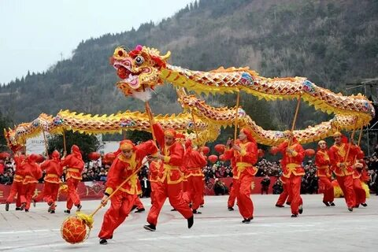

🎎 Культура Китая

От Конфуция до чайной церемонии — погружение в традиции Поднебесной
📜 Философия и религия
Китайская культура на протяжении тысячелетий формировалась под влиянием трёх главных учений: конфуцианства, даосизма и буддизма. Конфуцианство заложило основы семейных ценностей, уважения к старшим и строгой социальной иерархии. Даосизм, напротив, учил человека жить в гармонии с природой, следовать принципу «у-вэй» (недеяние) и искать баланс между инь и ян. Буддизм, пришедший из Индии, обогатил китайскую духовность идеями сострадания, кармы и медитации.
Эти три учения не противоречили друг другу, а скорее дополняли: китаец мог следовать конфуцианским нормам в общественной жизни, обращаться к даосским практикам для здоровья и долголетия, а в трудные времена искать утешения в буддийских храмах. Именно это переплетение философий создало уникальный культурный код Китая.
🧧 Традиционные праздники
Китайский календарь наполнен яркими праздниками, которые отмечаются сотнями миллионов людей по всему миру. Главным событием года остаётся Чуньцзе — Праздник весны (китайский Новый год). Он наступает по лунному календарю, обычно в конце января или начале февраля, и длится 15 дней. Улицы окрашиваются в красный цвет фонариков и бумажных украшений, запускаются фейерверки (чтобы отпугнуть злых духов), а семьи собираются за большим ужином воссоединения.
Другие важные праздники:
- Праздник фонарей (Юаньсяоцзе) — завершает новогодние гуляния; в небо запускают тысячи светящихся фонариков.
- Праздник драконьих лодок (Дуаньуцзе) — проходит в начале лета с гонками на длинных лодках и поеданием рисовых пирожков цзунцзы.
- Праздник середины осени (Чжунцюцзе) — время любования полной луной и угощения лунными пряниками с начинкой из сладкой бобовой пасты.
🎨 Искусство и литература
Китайское искусство — это окно в душу цивилизации. Каллиграфия считается высшей формой живописи: написание иероглифа приравнивается к медитации, а мастерство каллиграфа ценится наравне с талантом художника. Китайская живопись (гохуа) отличается от европейской: здесь нет перспективы и светотени, зато есть энергия «ци», которая течёт через мазки кисти по рисовой бумаге.
Литература Китая — одна из старейших в мире. «Четверокнижие» и «Пятикнижие» конфуцианского канона заложили основы образования. Великие романы — «Троецарствие», «Речные заводи», «Путешествие на Запад», «Сон в красном тереме» — до сих пор любимы читателями. А Пекинская опера объединяет музыку, пение, диалоги, акробатику и символический грим: цвет лица персонажа сразу говорит зрителю о его характере (красный — верность, белый — коварство, чёрный — честность).
🥢 Китайская кухня
Китайская кухня поражает разнообразием вкусов, ароматов и текстур. Её условно делят на четыре великие школы (иногда выделяют восемь): сычуаньская (острая, с обилием перца чили и сычуаньского перца), кантонская (сладковатая, с упором на свежесть морепродуктов), шаньдунская (солёная, с хрустящей корочкой) и цзянсуская (изысканная, с томлёными блюдами).
Отдельного упоминания заслуживает утка по-пекински — знаменитое блюдо с тонкой хрустящей кожицей, которое подают с блинчиками, соусом хойсин и нарезанным луком. Димсамы (дяньсинь) — маленькие паровые корзиночки с начинками из креветок, свинины или овощей — популярны на завтрак. А китайская лапша, которую повар растягивает вручную прямо на глазах у посетителей, превращает приготовление пищи в настоящее шоу.
🍵 Чайная культура
Китай — родина чая. Легенда гласит, что император Шэнь-нун случайно открыл чай, когда листок с чайного куста упал в его котелок с кипятком. С тех пор чай стал не просто напитком, а важнейшей частью культуры. Гунфу-ча — это искусство заваривания чая, превращённое в медитативный ритуал. Маленький глиняный чайник прогревают, многократно заливают листья водой, и каждый настой имеет свой оттенок вкуса.
Основные виды китайского чая:
- Зелёный чай (Лунцзин, Билочунь) — неферментированный, лёгкий, с травянистыми нотками.
- Улун (Тегуаньинь, Дундин) — полуферментированный, цветочно-фруктовый.
- Пуэр — постферментированный, землистый, выдержанный годами.
- Красный чай (Цихун, Дяньхун) — полностью ферментированный, согревающий.
Чайная церемония учит неторопливости и вниманию к моменту — ценностям, которые остаются актуальными даже в современном Китае.
🥋 Боевые искусства (Ушу и Кунг-фу)
Китайские боевые искусства — это не просто навыки самообороны, а целостная система духовного и физического развития. Шаолиньский монастырь, основанный в V веке, считается колыбелью кунг-фу. Его монахи совмещали буддийскую медитацию с тренировками, развивавшими невероятную выносливость и силу. Именно отсюда пошли легенды о «летающих монахах» и мастерах, способных разбивать камни голыми руками.
Сегодня выделяют сотни стилей, но наиболее известны:
- Тайцзицюань — медленные, плавные движения, которые практикуют миллионы людей по утрам в парках для здоровья и долголетия.
- Вин-чунь — стиль, популяризованный Брюсом Ли; акцент на ближний бой и быстрые удары.
- Чанцюань (Длинный кулак) — спортивное направление с акробатическими элементами, часто используется в кино.
Китайские боевые искусства стали мировым наследием, вдохновляя кинематограф (фильмы с Джеки Чаном, Джетом Ли, Брюсом Ли) и миллионы практикующих, которые ищут в ушу путь к самосовершенствованию.
📚 Читайте также: Общая статья о Китае — география, достопримечательности, экономика.
В будущем здесь появятся статьи о Великой Китайской стене, Запретном городе и других чудесах Поднебесной.